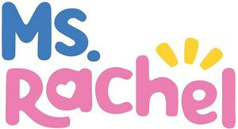

Trade Mark Journal No.2025/034 22 August 2025
WO0000001854601 (10,12,14,18,20,21,24,26,29,30,32)
Office of origin: United States of America
Date of International Registration:8 January 2025
Date of designation in the UK:
8 January 2025

The mark consists of the literal element MS. appearing in blue above the letters r, a, and c in the literal element RACHEL appearing in pink with a depiction of three sun rays in yellow above the letters h and e. The shape of a heart forms the void space in the letter a.
The mark contains the colours blue, pink, and yellow.
The literal element MS. appearing in blue, the literal element RACHEL appearing in pink, the depiction of three sun rays appearing in yellow.
International priority date claimed: 24 September 2024
(United States of America)
(98767757)
- Class 10
- Baby teething mittens; baby bottle nipples; pacifiers for babies; babies' bottles; pacifier clips; nipples for baby bottles; pacifier cloth in the nature of a lanyard for attachment to infant pacifiers; teething rings for babies; medical apparel in the nature of body suits for babies for use in medical examination and treatment; baby feeding pacifiers; incubators for babies.
- Class 12
- Children's car seats; bicycle accessories; booster seats for vehicles; bicycles; vehicles, namely, electronically motorized skateboards; rubber baby buggy bumpers; mini-bikes; motorized vehicles for children; pushchairs; scooters; electric bicycles; motorized vehicles, namely, go-carts; fitted covers for strollers, prams, and children's pushchairs; child seats, strollers, chariots, and trailers attached to bicycles; wagons; replacement parts for all the aforesaid goods; push scooters and vehicles not being toys.
- Class 14
- Jewelry; jewelry boxes; component parts for jewelry, clocks and watches, namely, clasps and beads for jewelry, movements for clocks and watches, clock hands, watch springs, watch crystals; charms being jewelry; key rings and key chains and charms therefor; wrist watches; precious metals; costume jewelry; precious and semi-precious stones.
- Class 18
- Fanny packs; tote bags; all-purpose carrying bags for use by children and parents of children; backpacks; slings for carrying babies; all-purpose carrying bags; luggage; duffle bags; baby carriers worn on the body; bags for sporting equipment, not adapted; sling bags; baby carrying bags; diaper bags; all-purpose reusable carrying bags; diaper bags incorporating diaper changing pads; handbags.
- Class 20
- Baby furniture; nursery furniture, household furniture, furniture cushions; support pillows for use in baby seating; nonmetal and non-paper containers for storage or transport; electric baby cradles; baby walkers; mirrors and picture frames; baby head support cushions; replacement parts for all the aforesaid goods; baby changing platforms; portable baby bath seats for use in bathtubs; non-metal safety gates for babies, children and pets; reusable baby changing mats; baby changing tables; bumper guards for cribs, other than bed linen; cots for babies, namely, carrycots; cradles for babies; baby bolsters; support pillows for use in baby car safety seats; pillows.
- Class 21
- Manual and electric toothbrushes; sippy cups for babies and children; bowls; serving trays, dishes, and utensils; dental floss; dinner plates.
- Class 24
- Sleeping bags for babies; crib bedding; textile fabrics for use in the manufacture of bedding; household linens; table covers; curtains; swaddling blankets; changing cloths for babies; diaper changing pads not of paper; crib sheets; textile fabrics; sleeping bags; bed blankets and bed sheets; towels of textiles; pillowcases of textiles; valanced bed covers.
- Class 26
- Natural or synthetic hair for wear; hair accessories, namely, sticks, clips, twisters, ties, and ribbons; haberdashery ribbons and bows; ribbons and bows for gift wrapping, not of paper; charms, other than for jewellery, key rings or key chains; dressmakers' articles; wigs, toupees, false hair extensions and braids; barrettes, hair bands; textile bows for gift wrapping; electric and non-electric hair curlers, other than hand implements, hair curling pins, hair curling paper.
- Class 29
- Seed-based snack foods for children; fruit-based snack foods; dried fruit-based snacks; snack mix consisting of dehydrated fruit and processed nuts; candied fruit snacks; nut-based snack foods; yogurt-based snack foods.
- Class 30
- Cereal-based snack bars; breakfast cereals; cookies; candy; frozen yogurt-based snack foods; granola-based snack bars; crackers; gelatin-based chewy candies; multigrain-based snack foods; ice cream; frozen confections; cereal-based snack foods; confectioneries, namely, snack foods, namely, chocolate; cereal breakfast foods.
- Class 32
- Non-alcoholic water-based beverages; fruit beverages and fruit juices; preparations for making non-alcoholic fruit juice beverages; soft drinks, namely, sodas.
Songs for Littles, LLC
Representative: Bonum IP Limited, 34 Principal Rise, Dringhouses YORK YO24 1UF UNITED KINGDOM